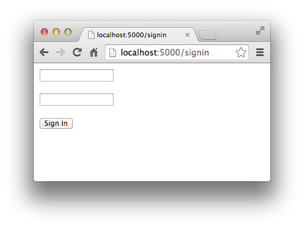
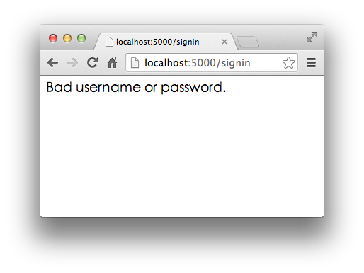

21-4 使用Web框架
了解了WSGI框架，我们发现：其实一个Web App，就是写一个WSGI的处理函数，针对每个HTTP请求进行响应。
但是如何处理HTTP请求不是问题，问题是如何处理100个不同的URL。
每一个URL可以对应GET和POST请求，当然还有PUT、DELETE等请求，但是我们通常只考虑最常见的GET和POST请求。
一个最简单的想法是从environ变量里取出HTTP请求的信息，然后逐个判断：
def application(environ, start_response):
method = environ['REQUEST_METHOD']
path = environ['PATH_INFO']
if method=='GET' and path=='/':
return handle_home(environ, start_response)
if method=='POST' and path='/signin':
return handle_signin(environ, start_response)
...
只是这么写下去代码是肯定没法维护了。
代码这么写没法维护的原因是因为WSGI提供的接口虽然比HTTP接口高级了不少，但和Web App的处理逻辑比，还是比较低级，我们需要在WSGI接口之上能进一步抽象，让我们专注于用一个函数处理一个URL，至于URL到函数的映射，就交给Web框架来做。
由于用Python开发一个Web框架十分容易，所以Python有上百个开源的Web框架。这里我们先不讨论各种Web框架的优缺点，直接选择一个比较流行的Web框架——Flask来使用。
用Flask编写Web App比WSGI接口简单（这不是废话么，要是比WSGI还复杂，用框架干嘛？），我们先用easy_install或者pip安装Flask：
$ easy_install flask
然后写一个app.py，处理3个URL，分别是：
GET /：首页，返回Home；
GET /signin：登录页，显示登录表单；
POST /signin：处理登录表单，显示登录结果。
注意噢，同一个URL/signin分别有GET和POST两种请求，映射到两个处理函数中。
Flask通过Python的装饰器在内部自动地把URL和函数给关联起来，所以，我们写出来的代码就像这样：
from flask import Flask
from flask import request
app = Flask(__name__)
@app.route('/', methods=['GET', 'POST'])
def home():
return '<h1>Home</h1>'
@app.route('/signin', methods=['GET'])
def signin_form():
return '''<form action="/signin" method="post">
<p><input name="username"></p>
<p><input name="password" type="password"></p>
<p><button type="submit">Sign In</button></p>
</form>'''
@app.route('/signin', methods=['POST'])
def signin():
# 需要从request对象读取表单内容：
if request.form['username']=='admin' and request.form['password']=='password':
return '<h3>Hello, admin!</h3>'
return '<h3>Bad username or password.</h3>'
if __name__ == '__main__':
app.run()
运行python app.py，Flask自带的Server在端口5000上监听：
$ python app.py
* Running on http://127.0.0.1:5000/
打开浏览器，输入首页地址http://localhost:5000/：

首页显示正确！
再在浏览器地址栏输入http://localhost:5000/signin，会显示登录表单：

输入预设的用户名admin和口令password，登录成功：

输入其他错误的用户名和口令，登录失败：

实际的Web App应该拿到用户名和口令后，去数据库查询再比对，来判断用户是否能登录成功。
除了Flask，常见的Python Web框架还有：
当然了，因为开发Python的Web框架也不是什么难事，我们后面也会自己开发一个Web框架。
小结
有了Web框架，我们在编写Web应用时，注意力就从WSGI处理函数转移到URL+对应的处理函数，这样，编写Web App就更加简单了。
在编写URL处理函数时，除了配置URL外，从HTTP请求拿到用户数据也是非常重要的。Web框架都提供了自己的API来实现这些功能。Flask通过request.form['name']来获取表单的内容。